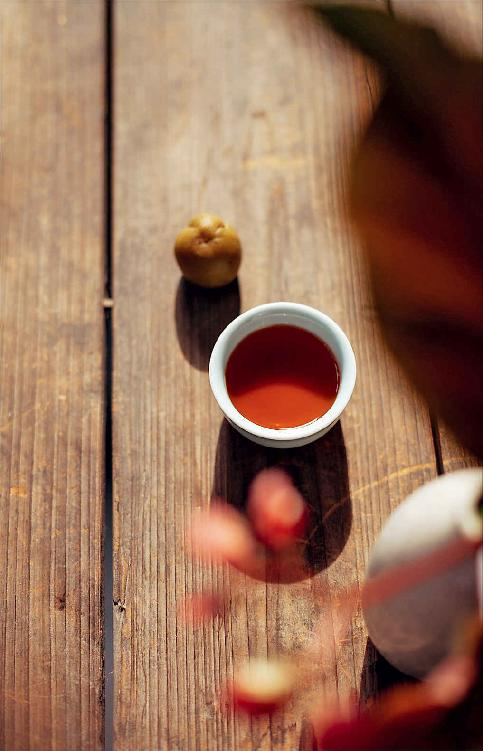
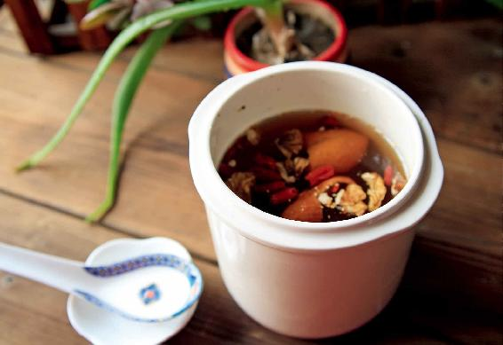
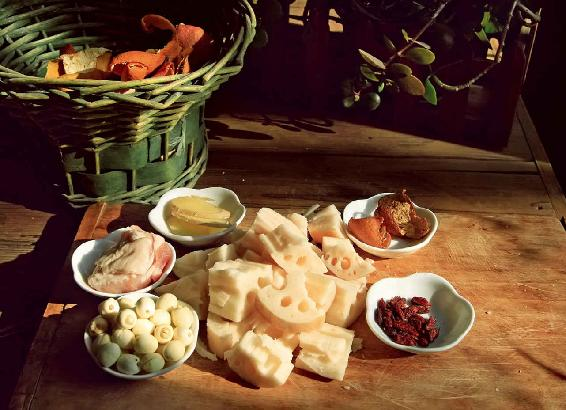

大雪节气在月初，它属于节，所以大雪节气的进补、养生、防病的所有方法和原则，在这一个月都适用。
仲冬这个月是一年当中最应该防范突发大病的一个月，如果这个月没有防范好，可能会有生命危险。
有两种大病，在大雪节气所管的这个月都达到了发病高峰，而且都是突发的，一种是急性心肌梗死（急性心梗），一种是上消化道出血。
这两种病的发病都非常突然，事先没什么征兆。如果抢救不及时，后果非常可怕。而且，这两种病涉及的人群范围特别广，其中，急性心肌梗死被称为人类健康的“头号杀手”。
之前讲到大雪节气的大补，一是进补，二是自我补（就是封藏），而封藏中很重要的就是静养。这个可真不是随便说说而已，而是多少代人用生命换来的一个经验和教训。
大雪节气，如果您还像平时那样忙碌、操心、劳神，会让身体非常疲劳，给心脏、肝及整个消化系统带来巨大的伤害。可惜的是，很多人并不知道这种危害，这也是大雪节气的养生区别于其他节气的一个地方。
为什么每年的大雪节气因急性心肌梗死、上消化道出血而被送到医院进行紧急抢救的人特别多？这两种病都是可以迅速地置人于死地的病。它们的危险之处就在于，从二十几岁到八十几岁都可能中招，很多人平时看着好好的，觉得没什么毛病，但突然就发病了，送医院抢救都来不及，特别是急性心肌梗死。
平时我们总以为肿瘤、癌症是最可怕的“杀手”，其实，心梗早已取代癌症成为全世界的“头号杀手”，而且它杀人于无形，越是年轻的人心肌梗死发作之前越是没有征兆。每年都有这样的新闻报道，某某明星、某某公司董事长、某某平台的创始人等，因为急性心肌梗死发作而离开了人世。他们有的是在健身房跑步的时候发作，有的是在洗手间上厕所的时候发作，有的是在连续熬夜加班之后发作，都是非常突然，事先根本没人知道他们的心脏会出问题。
以前人们比较关注老年人心梗发作的问题，现在年轻人心梗发作的情况也越来越多。
我有一个朋友，他就连续遇到两起这样的事情。一起是他的一个朋友半夜加完班开车回家在路上心梗发作，车失控后直接撞过护栏飞到了路外。另一起是他们请客户吃饭，他同事喝着喝着就一头倒在了桌子上。起初大家都以为是喝多了还跟他开玩笑，结果发现人怎么喊、怎么推都不动弹，这才慌了神，赶紧往医院送，但在去医院的路上，人就已经去世了。
这两个人都刚30岁出头，他们的朋友、同事也都是二三十岁的年轻人，这事儿对这些年轻人的震动是非常大的，原来这些人工作起来都是非常玩命的，现在他们才意识到，生命很脆弱，年轻也不一定是本钱。
在大雪节气这个月，我们真的要放慢工作的节奏，因为这个月是心脏功能最为脆弱的时候。
其实，急性心梗的发作也不是完全没有预兆的，在它发作前往往会出现一些迹象，只不过常常会被人误解为其他的疾病。比如，有的人并没感觉到心脏有什么不舒服，而是觉得胃痛、牙痛、脖子痛，甚至有人说鼻子痛等等。
下面是几种常见的、容易搞错的发作前的征兆，您一定要注意!
第一个是胃痛
如果您平时没有胃病，突然觉得胃很不舒服，还有烧心的感觉，而且不是因为吃东西引起的，可能是劳累了，或者是生气了，就觉得胃很难受，那您要留意一下自己是不是还有胸闷，是不是左边的手臂麻木，假如这些症状都有，您就要赶快到医院看急诊，排除心梗的可能性。
第二个是肩膀痛
这里的肩膀痛跟肩周炎的肩膀痛有什么区别呢？肩周炎的肩膀痛，痛的时间比较长，会一直痛，而且胳膊的活动还会受到限制，有的人甚至扣扣子都觉得很难受、不方便，这是肩周炎的肩膀痛。
而心梗发作时的肩膀痛，它是一过性的，一会儿痛一会儿不痛，休息休息就可以得到缓解，这种痛吃止痛药没有任何作用。
有这种情况您就要非常警惕，要去医院查一查。这有可能不是肩膀在痛，而是心脏的问题，因为肩膀和心脏的疼痛都是通过胸椎前面的神经传导到大脑，有时候大脑分不清楚这种疼痛是来自身体什么部位，所以就会误认为是肩膀在痛。
第三个是头痛
特别是在劳累以后，头突然痛，这时要特别当心，因为心梗会让我们的大脑缺血而引发头痛。
第四个是不痛
不痛就是没有痛的感觉，如果您家里有高龄老年人，要特别注意这一点。老年人年纪比较大了，可能已感觉不到心梗的疼痛了。还有就是表现为不想吃东西，不想说话，根本就不跟人交流，处于一种非常麻木的状态。家里的高龄老年人如果突然是这样的状态，那您就要特别注意，一定要带到医院给他查一查。
记住以上这些征兆，我们就可以在关键时刻挽救自己和身边人的生命。
心梗是冠状动脉急性、持续性缺血引起的心肌坏死。心肌缺血超过30分钟以上，这种坏死就是不可逆转的，所以对于急性心梗，我们要争取的就是时间。
请您记住，大雪节气管的这一个月，如果我们过度劳累，对心脏造成的损伤要比其他的季节大得多。
在《黄帝内经》里，古人早就总结过，人怎么样能活到100岁，很重要的一条就是“不妄作劳”。每年到了大雪节气的这一个月，也就是仲冬，希望您能做到不劳心、不劳身、不劳神，这对心脏来说是最好的养护。
上消化道出血是大雪节气高发的大病之一，它是急救中常见的一个急症，致死率能达到百分之十几。
我们有时候在武侠小说里读到，某某人吐血三升而亡，这种吐血其实就是上消化道出血。
上消化道出血离我们的生活并不遥远，经常会有人因为上消化道大量出血而被送往医院抢救。还有一种比较危险的就是隐形的出血，我们可能看不出这个人出血了，但是他会有一个贫血、发热、头晕，甚至是有心脏病的感觉，这时候就很容易被误诊。

上消化道出血的患者年龄从二十几岁到七八十岁都有，发病的时间也特别集中，一般是在冬天和春天，尤其是大雪节气所在的仲冬之月。
一年中，冬天最冷的一段时间的发病率占整个一年的将近一半，而大雪节气期间的发病率又占到整个冬季的将近1/3。
因为之前特别强调南方的朋友在冬天也要注意保养，就举一个南方的例子。以福建省为例，到了大雪节气还很暖和，夜里穿单衣都会出汗，但这里一样受到节气的影响。
福建省的一家医院曾经统计过，过去10年间，有216位病人是因为上消化道出血住院的，住院的高峰日是12月15日（大雪节气期间）。
这并不是在福建省才有的现象，浙江省、黑龙江省也有，从南到北，都有医院做过类似的统计和分析，结果都是相同的：在上消化道出血住院的病人当中，大雪节气期间的住院人数是最多的。
在东北地区的朋友们更要注意一下，倒不是因为东北特别冷，而是因为东北的酒文化传统比较久远，喝酒的人比较多，因喝酒引起脾胃受伤而吐血的情况也会比较多。比如，黑龙江省的一个县城，人口不是很多，但3年间就有149人因上消化道出血而住院，有一半的人都是在冬天发病的，其中有21人是在大雪节气期间发病。
哪些朋友需要特别注意这些呢？
一、有肠胃疾病的人。
二、有肝病的人，比如，曾经患过乙肝，或者有肝硬化的人。
三、有胆道出血、胆囊结石或者是做过胆手术的人。
四、有胰腺疾病的人。
五、有动脉硬化的人。
六、做过大手术的人。
上消化道出血的典型症状是吐血和黑便。但这个病在出血量比较少的情况下，有可能是没有症状的，或者是出血量稍微多一点儿，在还不是太明显的情况下，只是有贫血、发热、头晕或者四肢冰冷，甚至有心脏病的感觉。这些情况很容易被人忽略，从而耽误急救的时机。

有些朋友可能不太了解什么是上消化道。
人体的消化道分上下两个部分：上消化道从嘴巴开始，经过食管，然后到下面的胃和十二指肠；下消化道从空肠开始，经过回肠到大肠。
人体消化道，是从嘴巴到食管、胃、小肠再到大肠。其中的小肠被分成两半，上面的一半叫十二指肠，属于上消化道；而下面的一半就叫空肠和回肠，它们跟大肠一起构成了下消化道。
一般俗称的胃出血，其实在医学上还会被细分，到底是胃在出血，还是十二指肠在出血，这是不一样的，但它们都被统称为上消化道出血。
上消化道出血有时候并不表现为吐血，而是表现为黑便——排出的大便会像柏油一样黑而发亮。如果出现排黑便的情况，您要马上去医院挂急诊。
1.少喝酒，保持情绪的稳定
上消化道出血，也就是俗称的胃出血，它跟肝病、胃病及长期饮酒有很大关系。现在的年轻人要特别注意这一点，即便您平时身体比较健康，也有可能会出现这个问题。
我有一个好朋友，他年轻的时候是一个唇红齿白的美男子，过了很多年再见到他的时候，我发现他变得非常憔悴，也非常消瘦。我就问他怎么啦，他说他有一次跟人家喝酒，喝得很猛，醉得不省人事，结果回到酒店的房间后就胃出血了。由于他是一个人在房间，等他的朋友发现时，他已经不省人事了，随即他被朋友送到了医院。从那以后他的身体始终都没能恢复过来。
上消化道出血跟情绪也非常有关系。古人经常会说某人生了大气之后就吐血而亡，现实生活中也有一些名人因为一件事大怒，然后引起急性的胃出血而去世的例子，媒体对这种事情时有报道。
我为什么特意强调大家在大雪节气期间一定要注意静养，注意保持自己情绪的稳定，就是因为在大雪节气期间保持情绪的稳定，保持心情的愉快，比在其他任何节气都更加重要。
2.宜食用多加栗仁、核桃仁的大补养藏汤
预防上消化道出血，也可以从饮食上来着手，比如，适合在大雪节气喝的大补养藏汤。
有人嫌它有一种涩味，殊不知这种涩味来自栗仁皮、核桃仁皮、莲子含有的多酚类营养物质。这种涩味可以固摄人体的精气，还有止血的作用。所谓止血，并不是说它们会让人体的血液不通畅，而是说它们会止住人体好血的流失，不让其溢出血脉之外。
如果您平时有胃溃疡、十二指肠溃疡，建议您在煮大补养藏汤时，多放点带皮的核桃仁和带皮的栗仁，这对预防胃溃疡和十二指肠溃疡引起的上消化道出血是很有帮助的。
曾经有朋友给我留言说：“陈老师，我的食管炎犯了怎么办，我可不可以喝大补养藏汤？”其实是可以喝的，记得带皮的栗仁和带皮的核桃仁要多放一点。
3.喝美味的双莲墨鱼汤
如果您是在霜降节气的时候就开始喝双莲墨鱼汤了，那么到了大雪节气期间还可以继续喝，会对上消化道有一个更好的防护。
炖双莲墨鱼汤时要注意：必须把墨鱼肉和墨鱼骨放在一起炖，这样不仅滋阴补肾，对上消化道的溃疡和出血也有很好的防治作用。
